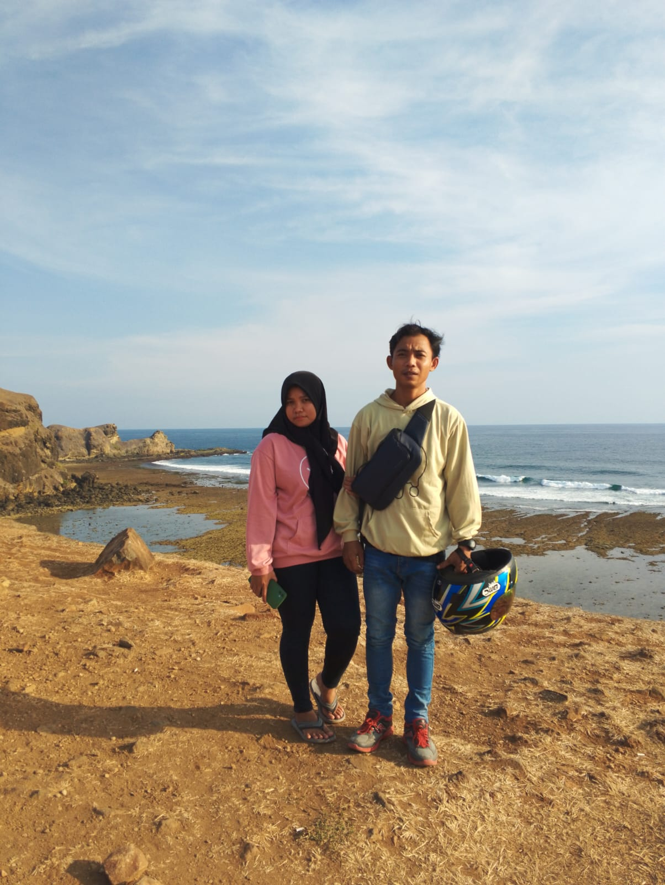
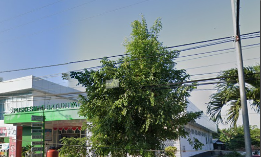
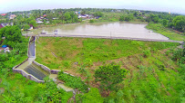

<!doctype html>
<html lang="en">
  <head>
  	<meta charset="utf-8">
  	<meta name="viewport" content="width=device-width, initial-scale=1, shrink-to-fit=no">
  	<link rel="icon" type="image/png" sizes="32x32" href="img/favicon/favicon-32x32.png">
	<link rel="icon" type="image/png" sizes="96x96" href="img/favicon/favicon-96x96.png">
	<link rel="icon" type="image/png" sizes="16x16" href="img/favicon/favicon-16x16.png">
  	<link rel="stylesheet" href="https://stackpath.bootstrapcdn.com/bootstrap/4.1.3/css/bootstrap.min.css">
    <link rel="stylesheet" type="text/css" href="src/leaflet.css">
    <script src="src/leaflet.js"></script>
    <!-- Load Esri Leaflet from CDN -->
    <script src="https://unpkg.com/esri-leaflet@2.2.3/dist/esri-leaflet.js"></script>
    <style>
    html{height: 100%;}
    body{padding: 0px;margin: 0px;height: 100%;}
    #container { width: 100%; height: 100% }
    .map {width: 100%;height: 100%}
    #basemaps-wrapper {
    position: absolute;
    top: 70px;
    right: 10px;
    z-index: 400;
    background: white;
    padding: 10px;
  }
  #basemaps {
    margin-bottom: 5px;
  }
    </style>
	    <div id="map" class="map"></div>
<!-- 	    <div id="basemaps-wrapper" class="leaflet-bar">
		  <select name="basemaps" id="basemaps" onChange="changeBasemap(basemaps)">
		    <option value="Topographic">Topographic</option>
		    <option value="Streets">Streets</option>
		    <option value="NationalGeographic">National Geographic</option>
		    <option value="Oceans">Oceans</option>
		    <option value="Gray">Gray</option>
		    <option value="DarkGray">Dark Gray</option>
		    <option value="Imagery">Imagery</option>
		    <option value="ImageryClarity">Imagery (Clarity)</option>
		    <option value="ImageryFirefly">Imagery (Firefly)</option>
		    <option value="ShadedRelief">Shaded Relief</option>
		    <option value="Physical">Physical</option>
		  </select>
		</div> -->
 	</div>
 	<!-- Optional JavaScript -->
    <!-- jQuery first, then Popper.js, then Bootstrap JS -->
    <script src="https://code.jquery.com/jquery-3.3.1.slim.min.js" ></script>
    <script src="https://stackpath.bootstrapcdn.com/bootstrap/4.1.3/js/bootstrap.min.js"></script>
	<script src="geojeson/lajut.js" type="text/javascript"></script>
	
    <script type="text/javascript">

   	//add map utama
	var mymap = L.map('map').setView([-8.788302,116.376261], 18);
	L.tileLayer('https://tile.openstreetmap.org/{z}/{x}/{y}.png', {
		maxZoom: 19,
		attribution: '&copy; <a href="http://www.openstreetmap.org/copyright">OpenStreetMap</a>'
	}).addTo(mymap );

	// L.tileLayer('https://api.tiles.mapbox.com/v4/{id}/{z}/{x}/{y}.png?access_token=pk.eyJ1IjoibWFwYm94IiwiYSI6ImNpejY4NXVycTA2emYycXBndHRqcmZ3N3gifQ.rJcFIG214AriISLbB6B5aw', {
	// 	maxZoom: 18,
	// 	attribution: 'Map data &copy; <a href="https://www.openstreetmap.org/">OpenStreetMap</a> contributors, ' +
	// 		'<a href="https://creativecommons.org/licenses/by-sa/2.0/">CC-BY-SA</a>, ' +
	// 		'Imagery © <a href="https://www.mapbox.com/">Mapbox</a>',
	// 	id: 'mapbox.streets'
	// }).addTo(mymap);
	
	//add basemap
	// var layer = L.esri.basemapLayer('Topographic').addTo(mymap);
 //  	var layerLabels;

	// function setBasemap(basemap) {
	//     if (layer) {
	//       mymap.removeLayer(layer);
	//     }

	//     layer = L.esri.basemapLayer(basemap);

	//     mymap.addLayer(layer);

	//     if (layerLabels) {
	//       mymap.removeLayer(layerLabels);
	//     }

	//     if (basemap === 'ShadedRelief'
	//      || basemap === 'Oceans'
	//      || basemap === 'Gray'
	//      || basemap === 'DarkGray'
	//      || basemap === 'Terrain'
	//    ) {
	//       layerLabels = L.esri.basemapLayer(basemap + 'Labels');
	//       mymap.addLayer(layerLabels);
	//     } else if (basemap.includes('Imagery')) {
	//       layerLabels = L.esri.basemapLayer('ImageryLabels');
	//       mymap.addLayer(layerLabels);
	//     }
	// }

	// function changeBasemap(basemaps){
	//     var basemap = basemaps.value;
	//     setBasemap(basemap);
	// }
	var marker1 = L.marker([-8.738566, 116.290157]).addTo(mymap)
		.bindPopup("<b>Dusun Selebung</b><br />Rumah KIIMZ").openPopup();
	var popup = L.popup();
	
	
	


		function onEachFeature(feature, layer) {
		var popupContent = "<p>Selamat Datang di Desa Lajut!</p>";

		if (feature.properties && feature.properties.popupContent) {
			popupContent += feature.properties.popupContent;
		}

		layer.bindPopup(popupContent);
	}

	L.geoJSON([lajut], {
		style: function (feature) {
			return feature.properties && feature.properties.style;
		},

		
		

		onEachFeature: onEachFeature,

		pointToLayer: function (feature, latlng) {
			return L.circleMarker(latlng, {
				radius: 8,
				fillColor: "#ff7800",
				color: "#000",
				weight: 1,
				opacity: 1,
				fillOpacity: 0.8
			});
		}
	}).addTo(mymap);
	var streets  = L.tileLayer('https://tile.openstreetmap.org/{z}/{x}/{y}.png', {
				id: 'mapbox.streets',   
				attribution: '&copy; <a href="http://www.openstreetmap.org/copyright">OpenStreetMap</a>'
			});
			var satelit = L.tileLayer('https://server.arcgisonline.com/ArcGIS/rest/services/World_Imagery/MapServer/tile/{z}/{y}/{x}', {
				id: 'mapbox.streets',
				attribution: 'Tiles &copy; Esri &mdash; Source: Esri, i-cubed, USDA, USGS, AEX, GeoEye, Getmapping, Aerogrid, IGN, IGP, UPR-EGP, and the GIS User Community'
				});

		var baseLayers = {
			"Streets": streets,
			"Satelite" : satelit
		};

		var mapIcon = L.Icon.extend({
			iconSize:     [32, 37]
		});
		var IbadahIcon = new mapIcon({iconUrl: 'icon/Ibadah.png'}),
			pendidikanIcon = new mapIcon({iconUrl: 'icon/pendidikan.png'}),
			pendidikan1Icon = new mapIcon({iconUrl: 'icon/pendidikan1.png'}),
			warungmakanIcon = new mapIcon({iconUrl: 'icon/warungmakan.png'}),
			AlfamartIcon = new mapIcon({iconUrl: 'icon/Alfamart.png'}),
			kopiIcon = new mapIcon({iconUrl: 'icon/kopi.png'}),
			puskesmasIcon = new mapIcon({iconUrl: 'icon/puskesmas.png'}),
			kantorIcon = new mapIcon({iconUrl: 'icon/kantor.png'}),
			mbungIcon = new mapIcon({iconUrl: 'icon/mbung.png'});


		//Tempat Ibadah
		var ib1 = L.marker([-8.7381291,116.2871607],{icon: IbadahIcon}).bindPopup("Masjid Nurul Iman ");
		var ib2 = L.marker([-8.7446921,116.2992005],{icon: IbadahIcon}).bindPopup("Masjid Al Ittihad ");
		var ib3 = L.marker([-8.7425225,116.2904677],{icon: IbadahIcon}).bindPopup("Masjid Nurul Hidayah Selebung ");
		var ib4 = L.marker([-8.7365302,116.3018951],{icon: IbadahIcon}).bindPopup("Masjid Baiturrahman Kandong");
		var ib5 = L.marker([-8.7365978,116.3006881],{icon: IbadahIcon}).bindPopup("Masjid Baiturrahim Kandong ");
		var ib6 = L.marker([-8.7502357,116.305422],{icon: IbadahIcon}).bindPopup("Masjid Darul Mukmin Ngolak ");
        var ib7 = L.marker([-8.7480155,116.3033624],{icon: IbadahIcon}).bindPopup("Masjid Jamiq Al-Muttaqin ");
        var ib8 = L.marker([-8.7438178,116.2903566],{icon: IbadahIcon}).bindPopup("Masjid Miftahul Ula ");
		var ib9 = L.marker([-8.7449934,116.2964311],{icon: IbadahIcon}).bindPopup("Mushola Baitul Makmur");
		var ib10 = L.marker([-8.7499427,116.304491],{icon: IbadahIcon}).bindPopup("Mushola Darul Mukhlisin ");
		var ib11 = L.marker([-8.7452038,116.3142068],{icon: IbadahIcon}).bindPopup("Masjid Darul Najjaya ");
		var ib12 = L.marker([-8.7464506,116.2921921],{icon: IbadahIcon}).bindPopup("Masjid Al Muttaqin ");
		var ib13 = L.marker([-8.7417808,116.2947866],{icon: IbadahIcon}).bindPopup("Masjid Nurul Rolan ");
		var ib14 = L.marker([-8.7455256,116.297773],{icon: IbadahIcon}).bindPopup("Masjid Nurul Huda Lajut ");
		var ib15 = L.marker([-8.7544083,116.2953935],{icon: IbadahIcon}).bindPopup("Masjid Nurul Muttaqin ");
		var ib16 = L.marker([-8.7339646,116.3022207],{icon: IbadahIcon}).bindPopup("Mushola Gobar ");
		var ib17 = L.marker([-8.7414049,116.3092506],{icon: IbadahIcon}).bindPopup("Masjid Baitul Jannah ");

		var Ibadah = L.layerGroup([ib1, ib2, ib3, ib4, ib5, ib6, ib7, ib8, ib9, ib10, ib11, ib12, ib13, ib14, ib15, ib16, ib17]);
		
		// Marker Fasilitas Pendidikan


		var pd1 = L.marker([-8.7370319,116.2904164],{icon: pendidikanIcon}).bindPopup("SMPN 4 PRAYA TENGAH ");
		var pd2 = L.marker([-8.7422442,116.2921182],{icon: pendidikanIcon}).bindPopup("SDN SELEBUNG LAJUT ");
		var pd3 = L.marker([-8.7484949,116.3042613],{icon: pendidikan1Icon}).bindPopup("Ponpes Lajut ");
		var pd4 = L.marker([-8.748155,116.3038536],{icon: pendidikanIcon}).bindPopup("TK DHARMA WANITA LAJUT ");
		var pd5 = L.marker([-8.749246,116.3044735],{icon: pendidikan1Icon}).bindPopup("Ponpes Darunnadwah Al-Yamini ");
		var pd6 = L.marker([-8.7481717,116.3043431],{icon: pendidikan1Icon}).bindPopup("Ponpes Ihya Ulmuddin ");
		var pd7 = L.marker([-8.7500357,116.3049556],{icon: pendidikan1Icon}).bindPopup("TPQ Nurul Hikmah ");
		var pd8 = L.marker([-8.7425074,116.2899108],{icon: pendidikan1Icon}).bindPopup("TPQ Al-Firdaus ");
		var pd9 = L.marker([-8.7475175,116.3050455],{icon: pendidikanIcon}).bindPopup("SDN 1 LAJUT ");
		var pd10 = L.marker([-8.7409278,116.3086246],{icon: pendidikanIcon}).bindPopup("SDN GERENENG ");
		var pd11 = L.marker([-8.7362027,116.301211],{icon: pendidikan1Icon}).bindPopup("TPQ DUSUN KANDONG ");
		var pd12 = L.marker([-8.7457308,116.3056168],{icon: pendidikan1Icon}).bindPopup("MADRASAH NURUL FALAH NW ");
		var pd13 = L.marker([-8.7500343,116.3049289],{icon: pendidikan1Icon}).bindPopup("TPQ Nurul Hikmah ");
		
		var pendidikan = L.layerGroup([pd1, pd2, pd3, pd4, pd5, pd6, pd7, pd8, pd9, pd10, pd11, pd12, pd13]); 

		//Fasilitas umum

		var mr1 = L.marker([-8.7480948,116.3044687],{icon: AlfamartIcon}).bindPopup("Indomaret raya batunyala " );
		var mr2 = L.marker([-8.7496617,116.3041447],{icon: warungmakanIcon}).bindPopup("Rumah Makan Tezui ");
		var mr3 = L.marker([-8.7513908,116.3038675],{icon: warungmakanIcon}).bindPopup("Rumah Makan Nasi Balap Tania ");
		var mr4 = L.marker([-8.7384112,116.2873301],{icon: kopiIcon}).bindPopup("Tongkrongan anak Muda  ");
		var mr5 = L.marker([-8.7303284,116.3121885],{icon: puskesmasIcon}).bindPopup("Puskesmas Batunyala ");
		var mr6 = L.marker([-8.7457469,116.3091902],{icon: mbungIcon}).bindPopup("Embung Raba ");
		var mr7 = L.marker([-8.7484788,116.3061511],{icon: warungmakanIcon}).bindPopup("Warung Makan Toni ");
		
		var umum = L.layerGroup([mr1, mr2, mr3, mr4, mr5, mr6, mr7]);

		//pemerintahan
		var pm1 = L.marker([-8.7342144,116.3166865],{icon: kantorIcon}).bindPopup("KANTOR CAMAT PRAYA TENGAH ");
		var pm2 = L.marker([-8.7472625,116.3047839],{icon: kantorIcon}).bindPopup("KANTOR DESA LAJUT ");
		var pm3 = L.marker([-8.734935,116.3135594],{icon: kantorIcon}).bindPopup("KANTOR DESA BATUNYALA ");
		
		var pemerintah = L.layerGroup([pm1, pm2, pm3]);
		
		var overlays = {
			"Ibadah": Ibadah,
			"pendidikan": pendidikan,
			"umum": umum,
			"pemerintah": pemerintah,
		};
		L.control.layers(baseLayers, overlays).addTo(mymap);

    </script>

    </script>
  </body>
</html>